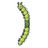
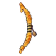
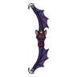
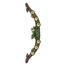
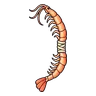
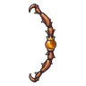
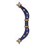
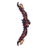
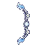

ธนูธนูทั้งหมด 47 ชิ้น เรียงตามเลเวลชื่อLvATKธาตุได้จากธนูกิ่งหลิว145ไม่มีธาตุหุ่นไล่กาถือฝาถัง 0.25%ธนูยาวพราน142ไม่มีธาตุอาวุธเริ่มต้นของสาย (ได้ตอนเปลี่ยนอาชีพ)ธนูหนอนผีเสื้อ542พิษผีเสื้อราตรีเรืองแสง 0.12%ธนูยาวไม้แอช947ไม่มีธาตุสไลม์น้ำผึ้ง 0.25%ธนูรวงผึ้ง1242ไม่มีธาตุสไลม์น้ำผึ้ง 0.12%ธนูปีกแมลงปอ1540ลมแมลงปอไพลิน 0.06%ธนูเขี้ยวหมูป่า1847ดินหมูป่าเขี้ยวตัน ร่างเขาเงิน 0.25%ธนูสไลม์น้ำใส2140น้ำสไลม์น้ำใส 0.06%คันธนูรากใต้เงาจันทร์2461มืดบอสผู้ถูกรากสิงธนูราชาค้างคาว2455มืดราตรีราชาค้างคาว 0.5%ธนูยาวเหล็กกล้า2676ไม่มีธาตุมดระเบิด 0.25%ธนูลูกโอ๊กกระรอก2674ดินกระรอกปาลูกโอ๊ก ร่างขนคราม 0.5%ธนูหมาป่าเงาจันทร์2968มืดหมาป่าเงาจันทร์ 0.12%ธนูหิ่งห้อย3265ศักดิ์สิทธิ์ผีเสื้อราตรีเรืองแสง 0.06%ธนูกระดูกทหาร3475ไม่มีธาตุโครงกระดูกพลธนู 0.25%ธนูกุ้งน้ำเค็ม3672น้ำกุ้งน้ำเค็มยักษ์ 0.25%ธนูเขากวางป่า3668ไม่มีธาตุกองกระดูกแตกตัว 0.12%ธนูไม้ถ่านคุ3865ไฟโกเลมหินแดง ร่างผลึก 0.06%ธนูเขาแกะเมฆ4076ไม่มีธาตุแกะเมฆเขาม้วน 0.25%ธนูหางจิ้งจอกถ่าน4268ไฟจิ้งจอกถ่านแดง 0.12%ธนูกรงเล็บอินทรี4568ไม่มีธาตุอินทรีพายุ 0.12%ธนูผีน้อยจับมือ4765วิญญาณผีดวงไฟ 0.06%ธนูนางพญามด5089ดินรังนางพญามด 0.5%ธนูราชาเห็ด5089พิษราชาเห็ดเรืองแสง 0.5%ธนูไม้ดำฝังเงิน52104ไม่มีธาตุสปอร์พิษลอย 0.25%ธนูซาลาแมนเดอร์5493ไฟซาลาแมนเดอร์ 0.12%ธนูหยาดน้ำค้างกินแมลง5689พิษหยาดน้ำค้างกินแมลง ร่างใบเขียว 0.12%ธนูต้นกกหนองน้ำ5793น้ำหมาป่าหิมะ 0.12%ธนูหนังงูหนอง60103พิษงูหนองพิษ 0.25%ธนูเทียนวิญญาณ6289วิญญาณวิญญาณเทียน 0.06%ธนูภูตหมอก6693มืดภูตหมอกเงา 0.12%ธนูปีกนกฮูก6889ลมลูกนกฮูกจ่าฝูง 0.06%ธนูเกราะอัศวินกระดูก7093ไม่มีธาตุอัศวินกระดูก 0.12%ธนูกลุ่มดาว7389ศักดิ์สิทธิ์มดทหาร 0.06%ธนูราชาสุสาน75121มืดบัลลังก์ราชาสุสาน 0.5%ธนูคอมโพสิตสามชั้น77124ไม่มีธาตุหุ่นระฆัง ร่างเงิน 0.25%ธนูแก่นไม้โบราณ80128ดินต้นไม้ยักษ์โบราณ 0.25%ธนูอิมป์เปลวไฟ82118ไฟอิมป์เปลวไฟ 0.12%ธนูหนวดคราเคน84118น้ำหนวดคราเคน ร่างแดงเข้ม 0.24%ธนูแสงออโรร่า84113ลมหุ่นระฆัง 0.06%ธนูด้วงแรดยักษ์86118ไม่มีธาตุด้วงแรดยักษ์ 0.12%ธนูตัวคืบรากดำ86113มืดตัวคืบรากดำ ร่างแดงเลือด 0.12%ธนูน้ำตกราตรี88113น้ำหุ่นช่างซ่อม 0.06%ธนูวิญญาณพรานโบราณ91113วิญญาณชาวเมืองหมอก 0.06%ธนูนกกระสาเงา93128ไม่มีธาตุนกกระสาเงา 0.25%ธนูมังกรลาวา97154ไฟหัวใจมังกรลาวา 0.5%ธนูจันทร์เงินนิรันดร์99166ลมดรอปทั่วโลก Lv 90+